Двери, окна, серьёзный монтаж. Спросите задачу и объём. Предложите пистолет и очиститель в комплект.
Своя марка · розница
MIKA
Откройте вкладку. Товары собраны по типам и моделям: где отличается только литраж или размер — одно общее описание, как продавать.

Главный собственный бренд сети. Баланс качество + цена + широкий ассортимент.
Что сказать покупателю
- «Это наша собственная марка — без переплаты за громкое имя».
- «Можно собрать всё нужное в одной линейке».
- «Подходит и для дома/дачи, и для рабочих задач».
Ассортимент и как продавать — во вкладках слева/сверху: пены, насосы, масла, тачки и дальше по типу товара.


Для работ на морозе, когда обычная «не берётся». Уточните температуру на улице. Если холодно — берите зимнюю.
Где важна пожарная безопасность: проёмы, коммуникации, «по нормам». Это не бытовая пена — объясните задачу и условия.
Клеить блоки, панели, утеплитель — не просто заполнять щели. Спросите, что клеят и площадь. Предложите пистолет новичкам.
Небольшие щели и разовые работы без пистолета. Если работы много или ставят двери/окна — переведите на проф 65.

Шпаргалка по пенам — держите под рукой у вкладки «Пены».

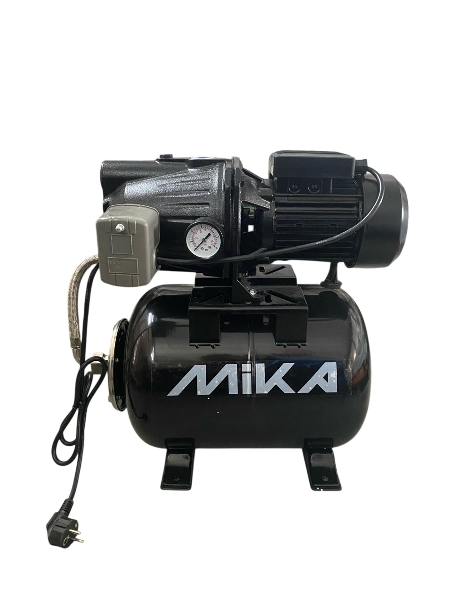
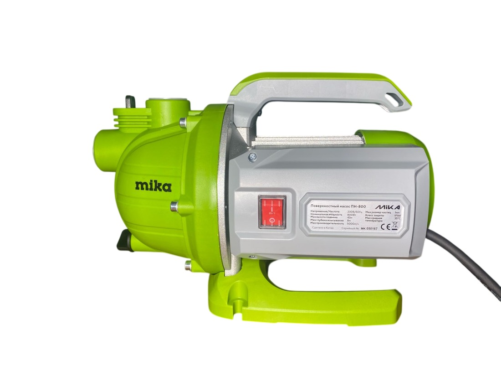
Погружные для колодца, бочки и неглубокого водозабора. Цифра — длина кабеля (10–40 м), В — верхний забор, Н — нижний. Спросите глубину и задачу — кабель берите с запасом.
Грязная вода, лужи, подтопления, частицы (у НД — до 30 мм). Не для питьевого колодца. Уточните загрязнённость и расход.
Давление в доме/на даче из колодца или ёмкости. Для постоянного напора в кранах. Сверьте всасывание, напор и наличие.
Лучше переносят примеси. Мощность — под глубину и напор. Спросите скважину и «песчаность» воды — берите с запасом.
Больше л/мин на чистой воде. Если мутно/песок — предложите винтовой. Сверьте диаметр скважины, кабель и напор.
Стоит рядом с источником, тянет с небольшой глубины: полив, ёмкость, неглубокий колодец. Не обещайте глубокую скважину.

Плотные брикеты для мангала: ровный жар, но разжиг 15–20 минут. Не лить жидкость и не раздувать сразу. Предложите стартер или спиртовые тюбики.
Как разжигать
Стартером: брикеты сверху, снизу 1–2 спиртовых тюбика, 15–20 минут.
«Домиком»: колодец из брикетов, внутрь щепа/лучина или тюбики на дно.

Все модели одной линейки — мешать бетон и раствор без лопаты «на глазок». Разница только в объёме барабана: чем больше заливка (дорожка, фундамент, стяжка), тем больше литраж. Спросите объём работ и предложите соседний объём, если нужного нет. Рядом можно сравнить с TORRA по цене и наличию.
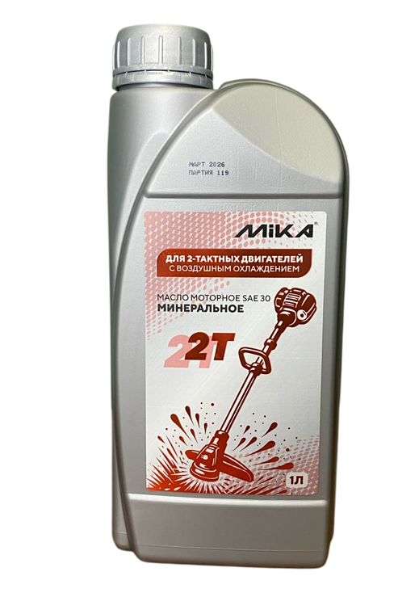
Масла 2T (двухтактные) — минеральное / полусинтетика1 л и 100 мл · с дозатором и 2T GARDEN · арт. 33483/1, 33482/1, 33482/1Д, 33483/1G, 33483/01, 33482/01
Для бензокос, части пил и мототехники, где масло мешают с бензином. Спросите технику и не путайте с 4T. Полусинтетика — обычно для более современных двигателей; дозатор удобен отмерять порцию; 100 мл — «добить» или редкое использование, 1 л — если косят часто.

Масла 4T минеральные SAE 30арт. 33441/1 · фасовка 1 л
Льётся в картер, без смешивания с бензином: газонокосилки, часть генераторов и мотоблоков 4T. Уточните, что написано в инструкции — 2T сюда не подойдёт.

Масла 4T полусинтетика (SAE 5W-30 и аналоги)арт. 33442/1 · фасовка 1 л
Для четырёхтактной техники, где производитель рекомендует полусинтетику. Спросите модель и допуск из инструкции. Не путайте с цепным маслом и с 2T.

Масло для смазки цепей и шинарт. 33436/1 · 1 л
Отдельное масло в бачок смазки цепи бензопилы — не моторное. Предлагайте к пиле, цепи или если пила «сухая/дымит». Коротко: «это для шины и цепи, в двигатель не лить».
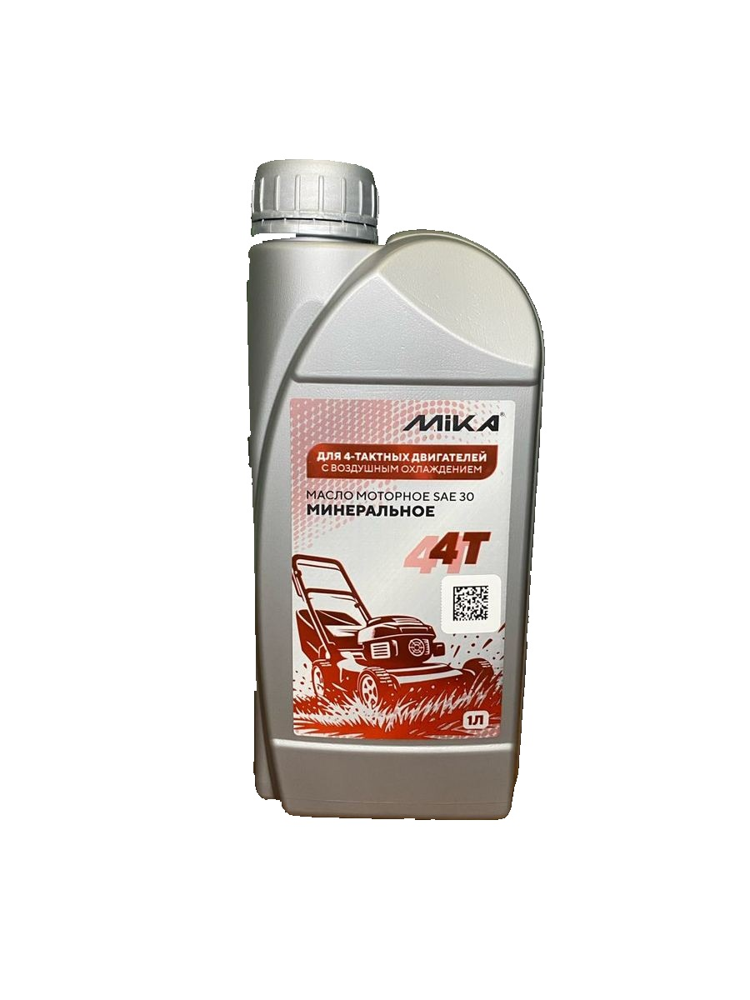
Масло для поршневых компрессороварт. 33425/1 · 1 л
В картер компрессора по уровню. Спросите модель и допуск из инструкции. Не подменяйте моторным 2T/4T для садовой техники. На полке берите канистру с надписью «для компрессоров».
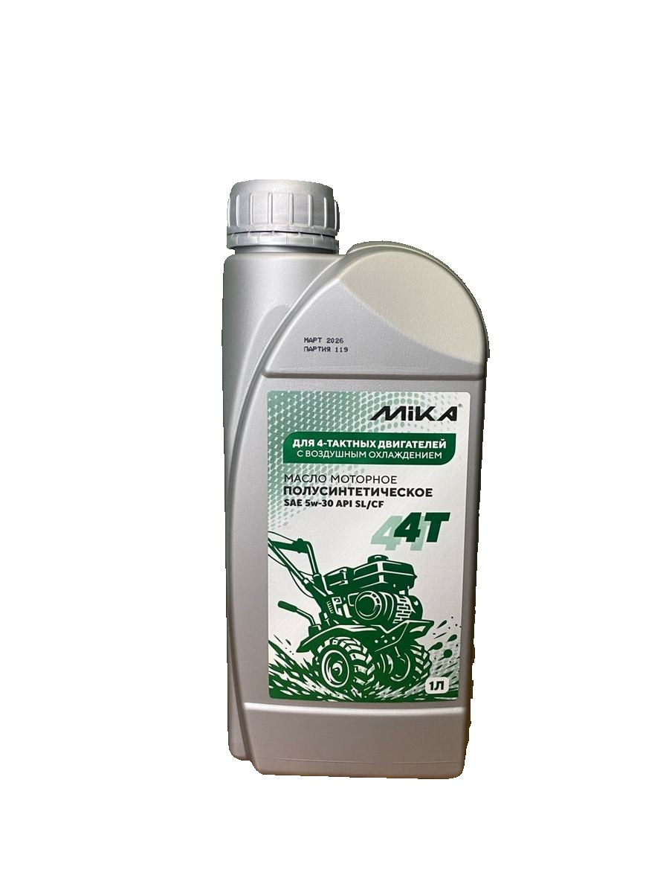
Трансмиссионное ТАД-17арт. 33414/1 · 1 л
Для редукторов и узлов, где указано ТАД-17. Сверьте назначение по технике. Не путайте с моторным маслом двигателя. Ориентируйтесь по этикетке «ТАД-17» на полке.
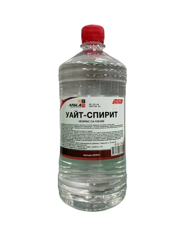
Уайт-спирит MIKAфасовки 0,5 / 1 / 5 / 10 л · арт. 33757/05 … 33757/10
Разбавление масляных составов и очистка кистей/поверхностей. Разница только в литраже: 0,5–1 л для дома, 5–10 л для объекта. Спросите объём работ и напомните про проветривание.
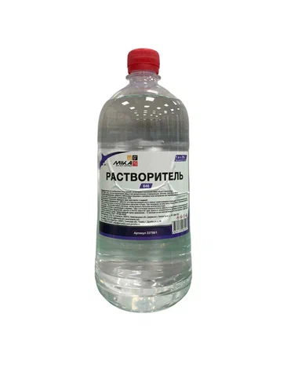
Растворитель 646 MIKAфасовки 0,5 / 1 / 5 / 10 л · арт. 33758/…
Под эмали и промывку инструмента после ЛКМ. Уточните краску покупателя. Литраж берите под объём — маленький для разового ремонта, канистра для маляров.
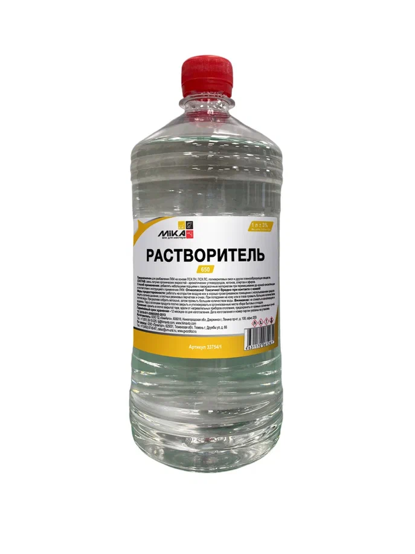
Растворитель 650 MIKAфасовки 1 / 5 л · арт. 33754/1 · 33754/5
Чаще под определённые эмали и ремонт. Сверьте с банкой краски, не подменяйте «любым растворителем». Выберите 1 или 5 л по объёму.
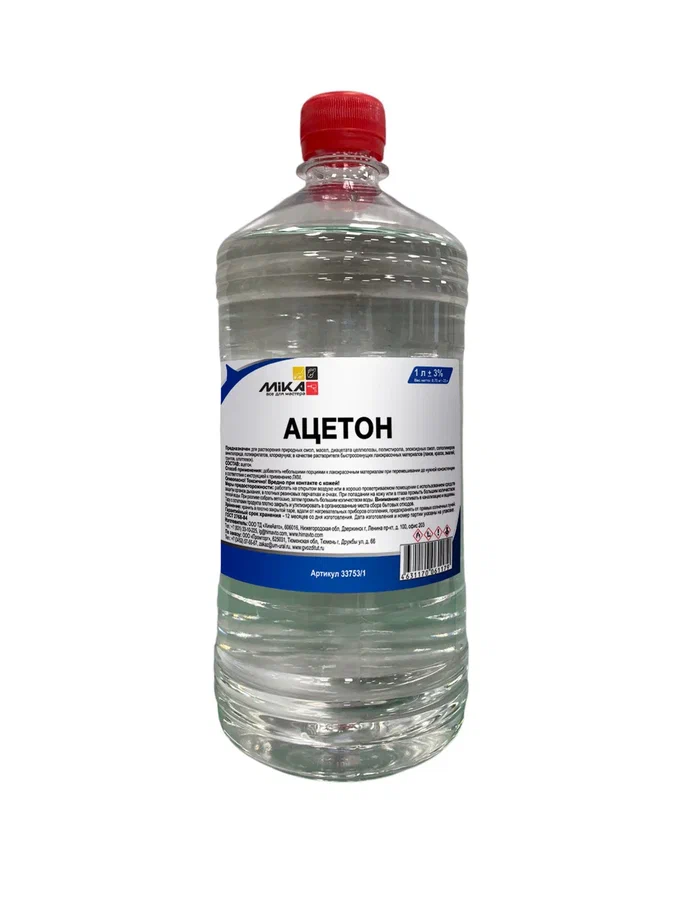
Ацетон MIKAфасовки 1 / 5 / 10 л · арт. 33753/…
Сильное обезжиривание и очистка (где допустимо). Резкий запах — вентиляция и осторожность с пластиком. Литраж — от бытового литра до канистры на объект.
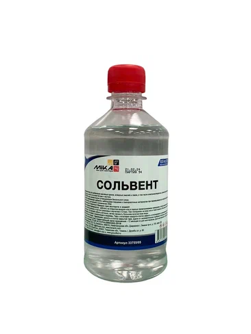
Сольвент MIKAарт. 33755/05 · 0,5 л
Растворитель для ЛКМ и очистки. Спросите задачу и краску. Предложите перчатки и напомните про запах.
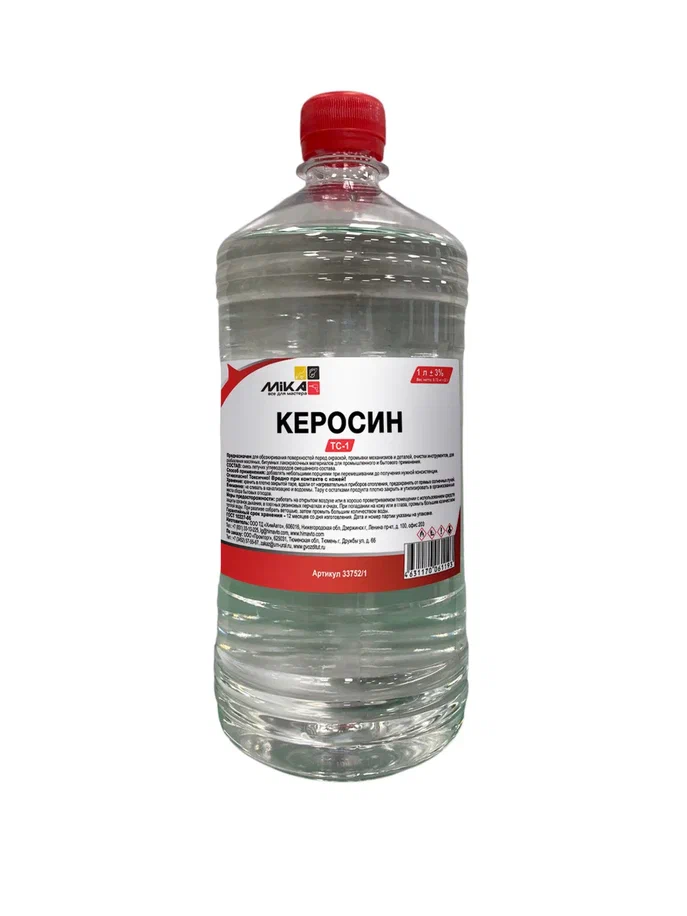
Керосин ТС-1 MIKAфасовки 1 / 5 л · арт. 33752/1 · 33752/5
Технические нужды: очистка, часть горелок и хозработ. Уточните назначение. 1 л для разового, 5 л если расход постоянный.
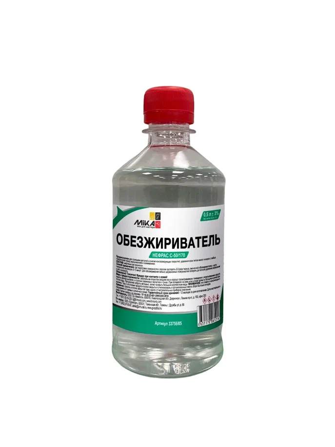
Обезжириватель MIKAарт. 33756/05 · 0,5 л · Нефрас С-50/170
Перед покраской, склейкой и антикором. Спросите материал: металл, пластик, авто. Коротко: «сначала обезжирить — потом краска/клей держатся лучше».
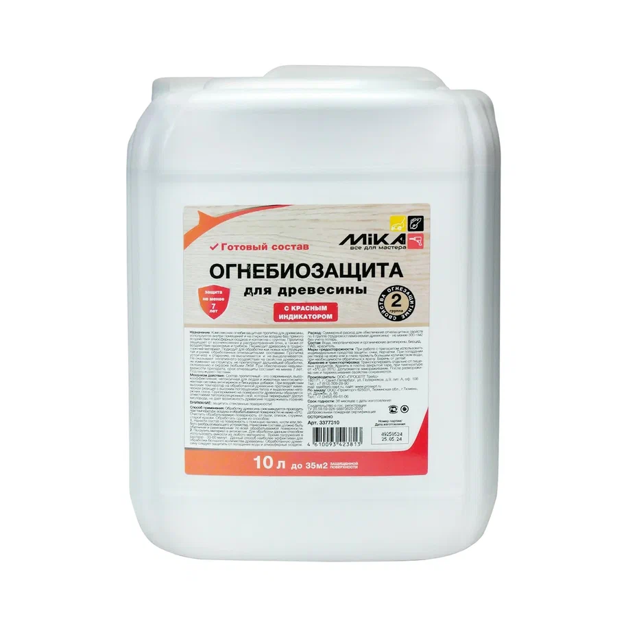
Огнебиозащита древесины MIKA ОГНЕБИО PROF (2 группа)арт. 3377310 · 10 л
Снижает риск возгорания и защищает от плесени/жука: бани, стропила, чердак, каркас. Напомните про расход и нанесение по инструкции, а не «чуть сбрызнуть».
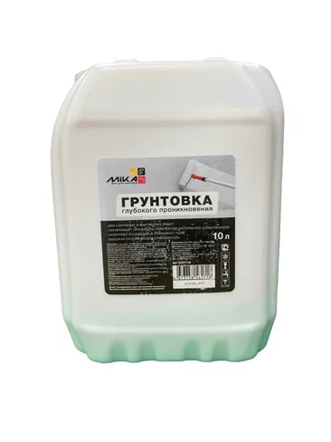
Грунтовка глубокого проникновения MIKAфасовки 5 / 10 л · арт. 3391705 · 3391710
Готовит стены под покраску/отделку, если пылят или сильно впитывают. Разница только в объёме канистры — подбирайте под площадь.
Тачки строительные одноколёсные110–140 л · арт. 33664216418 · 33664218602 · 336642PUBL и др.
Для раствора, щебня и мусора на стройке. Разница в объёме кузова, нагрузке и колесе. Спросите, сколько возят за раз и какое покрытие — предложите усиленную, если груз тяжёлый.

Тачки строительные двухколёсные110–140 л · арт. 33664226532 · 33664228602
Два колеса — устойчивее и легче вести по неровностям с тяжёлым грузом. Предлагайте, если жалуются, что одноколёсная «заваливается». Сверьте объём и допустимую нагрузку.

Тачка садовая / лёгкая одноколёснаяоколо 65–85 л · арт. 33664236202 и соседние
Лёгкая для земли, листьев и мелкого мусора на участке. Не обещайте стройку «под бетон» — для этого строительная серия. Уточните, сад это или стройка.
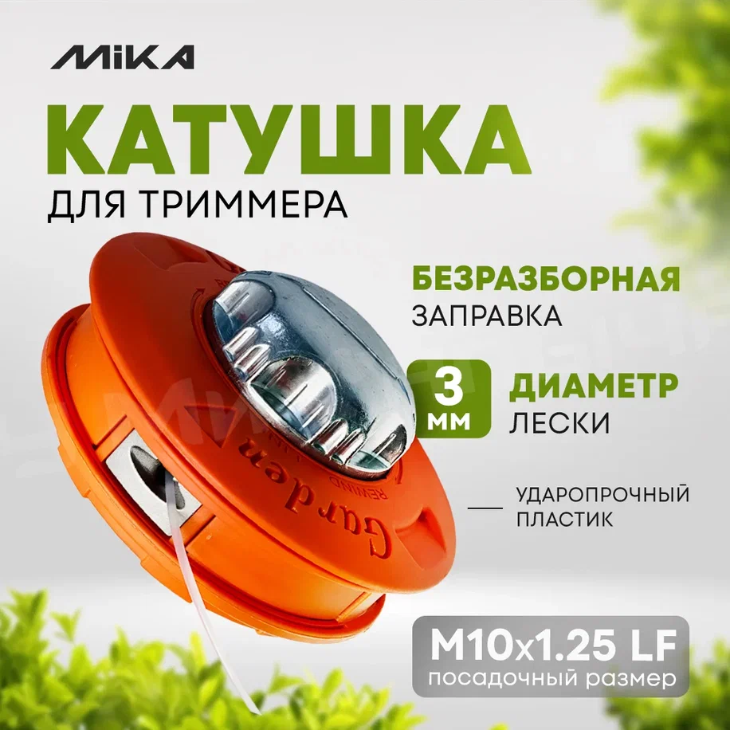
Катушки (головки) для триммера MIKA серии А / В / Спосадка М10×1.25 LF · модели А002…А034, В010, В021, С010 · леска обычно до 3 мм
Куда заправляется леска. Все с одной резьбой М10×1.25 — разница в конструкции головки (серия и номер модели). Главное — сверить посадку с триммером покупателя. Сразу предложите леску нужного диаметра «в запас».

Базовый расходник для травы. Чем больше диаметр — тем жёстче трава «берётся», но тяжелее двигателю. Длина мотка и упаковка (бумага/блистер) — по удобству; длинные мотки выгоднее «на сезон».
Профильная леска режет агрессивнее круглой — для жёсткой травы и зарослей. Спросите, что косят и какой диаметр стоял раньше. Не ставьте слишком толстую на слабый триммер.
Усиленные профили для более жёсткой работы и износа. Предлагайте, если обычная «летит» или косят жёсткое. Сверьте диаметр и длину мотка.
Подбор метизов MIKA — по типу товара (как в обучающих карточках). Сначала ясно скажите, что это, потом спросите задачу и размер.
1. Саморез потай оксид крупный шаг — ЧЁРНЫЙ
Для дерева и деревянного монтажа: шляпка утапливается. Крупный шаг хорошо берёт дерево. Спросите длину и во что крутят. Сразу биту PH2/PZ2. 1 кг — добрать, 3 кг — большой объём.
2. Шуруп универсальный — цинк белый / жёлтый
Универсальный крепёж: мебель, каркасы, смешанный монтаж. Белый/жёлтый цинк — не путать с чёрным оксидом. Подбирайте диаметр×длину. Продаётся на вес (кг).
3. Саморез кровельный
Кровля и профлист. Сначала основание: по металлу или по дереву — разные саморезы. Потом цвет RAL по образцу (или цинк). Не подменяйте обычным чёрным потайным саморезом.
4. Болт оцинкованный с полной резьбой DIN933
Крепёж на резьбе для сборки узлов. Размер — диаметр×длина (например М8×25). Сразу предложите гайку того же М и шайбу. Не путайте с саморезом и со шпилькой.
5. Гайка оцинкованная DIN934
Навинчивается на болт или шпильку того же диаметра (М8 к М8). Продавайте в паре с болтом/шпилькой и шайбой.
6. Шайба увеличенная оцинкованная DIN9021
Подкладывается под гайку/головку болта, чтобы не продавить материал. Размер d соответствует резьбе (d8 к М8). К болту и гайке предлагайте сразу.
7. Шпилька резьбовая оцинкованная DIN975
Не короткий болт, а длинная шпилька на 1–2 м. Когда крепят через расстояние или режут под размер. Спросите диаметр и длину. К ней — гайки и шайбы того же М.
Как подбирать биты MIKA
- Шлиц — PH или PZ. PH2 / PZ2 — самые ходовые.
- Длина — 50 мм обычно; 70–90 мм при вылете.
- Удар — лучше торсионные.

Для удара и плотных саморезов — пружинят и реже ломаются. Разница только в длине. Спросите, нужен ли вылет: 50 мм обычно, 70–90 мм в углубление.
Торсион под конкретный шлиц. Сверьте PH или PZ по саморезу — путаница срывает шлицы. Длину берите под задачу.
Два рабочих конца. Коричневая — повседневный монтаж; чёрная торсион — запас прочности; с ограничителем — гипсокартон и контроль глубины.
Базовый расходник без торсиона. Для обычного шуруповёрта без жёсткого удара. Подбирайте шлиц и длину; берите с запасом «на износ».
Стартовый комплект к шуруповёрту. Предлагайте, если собирают первый набор. Дополнительно можно дать ходовые PH2/PZ2 отдельно.
Адаптеры 1/4, 3/8, 1/2 — крутить головки шуруповёртом. Магнитные головки — под шестигранный крепёж; размер сверьте по ключу.

Мембрана супердиффузионная Mika AM (гидро-ветрозащита)35 и 70 м² · арт. 33921535 · 33921570
Трёхслойная защита кровли и стен: от влаги и ветра снаружи, пар изнутри выпускает. Куда предлагать: кровли, каркасные стены, вентилируемые фасады, чердак. Спросите узел и площадь — рулон 35 или 70 м². Не путайте с пароизоляцией В.

Плёнка ветро-влагозащита А премиум Mika 9035 и 70 м² · арт. 3392135 · 3392170
Тип А — ветро-влагозащита пирога стены/кровли. Предлагайте, когда утепляют снаружи или собирают каркас. Метраж рулона под площадь. Уточните, не нужна ли вместо неё супердиффузионная мембрана AM.
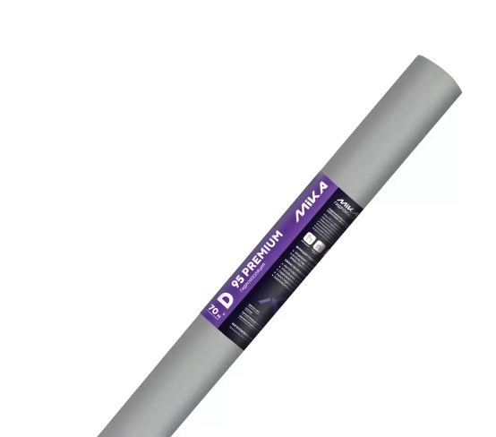
Плёнка пароизоляционная В премиум Mika 6035 и 70 м² · арт. 3392235 · 3392270
Пароизоляция — ставится со стороны тёплого помещения, чтобы пар не шёл в утеплитель. Предлагайте на внутреннюю отделку/утепление изнутри. Объясните: это не «то же самое», что ветрозащита А снаружи.
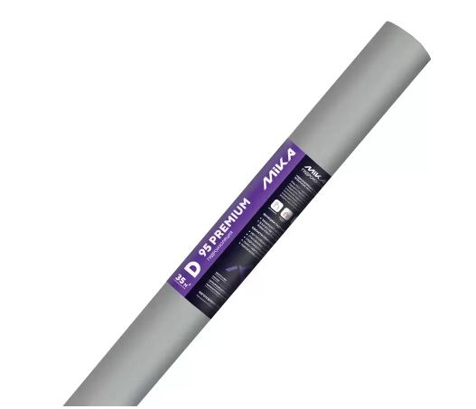
Плёнки гидро-пароизоляционные С и D премиум (Mika 70 / 95)35 и 70 м²
Усиленные плёнки С/D под гидро-пароизоляцию (пол, перекрытия, отдельные узлы по проекту). Спросите, что пишет инструкция к утеплителю или проект. Метраж — под площадь; покажите отличие от AM и от пароизоляции В.


Грубый рез бетона, кирпича, тротуарки. Для металла скажите: нужен круг TORRA, не алмаз.
Аккуратный рез керамики и керамогранита. Спросите материал плитки и сухой/мокрый рез. Для бетона грубее — сегмент/турбо.
Турбо — универсальный рез камня/бетона/кирпича; Ceramic — плитка и керамогранит. Сверьте диаметр под УШМ.
Когда задач несколько на одном диске. Уточните, что режут чаще. Если только металл пачками — круги TORRA.
Армированный бетон, гранит, железобетон. Предлагайте, когда обычный сегмент «не берёт». Сверьте диаметр 230.

Точильные станки BGM-125 / 150 / 200 (с лампой и без)арт. 3319125 · 33191125L · 3319150L · 33191200
Два круга для заточки ножей, топоров, стамесок и другого инструмента. Разница в диаметре круга, мощности и наличии лампы. Спросите, что точат: чем больше круг/мощность — тем тяжелее работы. Напомните про очки.
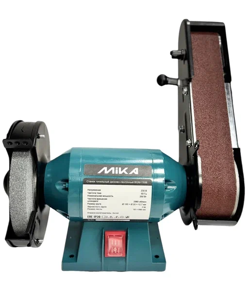
Дисково-ленточный BGM-150Bарт. 3319150B · 150 мм / лента 50×686
И круг, и лента — универсальнее обычного точила. Предлагайте в мастерскую, если нужна и заточка, и шлифовка лентой.

Для ГКЛ, плёнки, упаковки, обоев. 18 мм — легче/бытовые, 25 мм — мощнее. К ножу сразу предложите лезвия той же ширины.
Замеры на объекте. Разница в длине ленты и ширине. Магнитный зацеп удобен на металле. Спросите, какая длина нужна чаще.
Для рук в быту и хознуждах. Разница в варианте состава/перламутра. Предлагайте канистру 5 л, если расход постоянный — в мастерскую, на дачу, «для рук после работ».
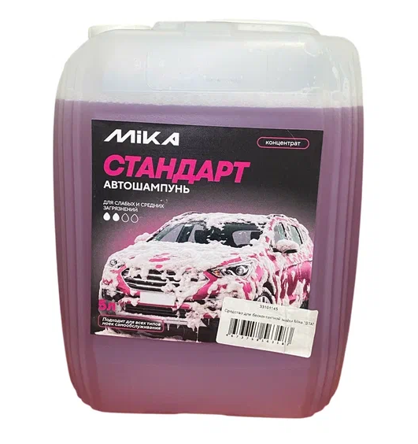
Бесконтактная мойка STANDARTфасовки 1 и 5 кг / л
Базовый автошампунь для слабых и средних загрязнений, подходит мойкам самообслуживания. Спросите, как часто моют: 1 л попробовать, 5 л если регулярно. Не путайте с PROF — PROF сильнее.
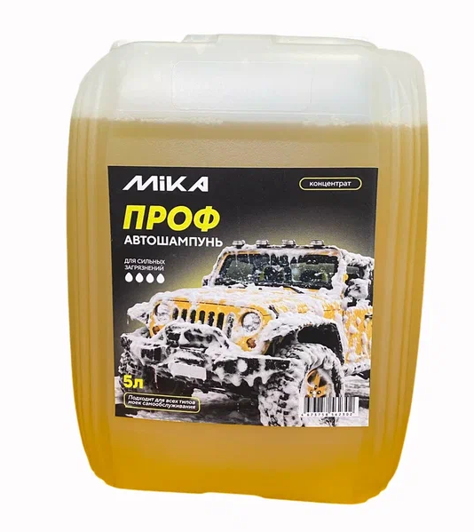
Бесконтактная мойка PROFфасовки 1 и 5 кг / л
Для сильных загрязнений — «профессиональнее» STANDART. Предлагайте, если машина сильно грязная или мойка коммерческая. Объясните: концентрат, разводят по инструкции.

Бесконтактная мойка EFFECTфасовки 1 и 5 кг / л
Линейка EFFECT — ещё один класс интенсивности в линейке бесконтактной мойки. Спросите задачу и сравните с STANDART/PROF по полке. Внутри линейки разница в основном в фасовке.
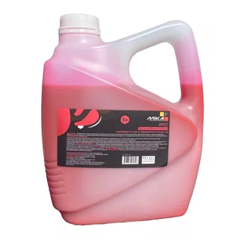
Антифриз MIKA EFFECT 5 лканистра 5 л
Охлаждающая жидкость для системы охлаждения авто. Спросите цвет/допуск по авто (что было залито) и не смешивайте «наугад» с неизвестным остатком. Предлагайте, когда готовят машину к зиме или меняют ОЖ.
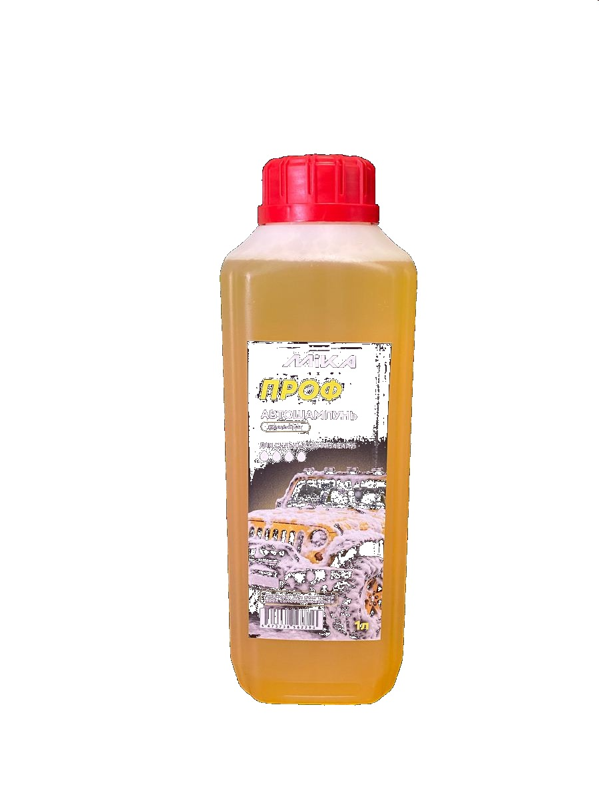
Автошампунь PROF 1 л — «попробовать»арт. линейки PROF · 1 л
Удобная фасовка, если покупатель не готов брать 5 л. Предлагайте как старт: «на одну-две мойки», потом можно вернуться за канистрой.

Убирать снег зимой. Предлагайте сезонно и тем, у кого треснула старая. Уточните комплектацию черенка/рукояти на складе.

Для ручной дуговой сварки. Разница только в фасовке: 1 кг — добить работу/попробовать, 5,5 кг — если варят часто. Спросите диаметр и ток аппарата.

Полив огорода и участка. Многослойный, меньше перегибов. Предложите соединители/пистолет полива, если их нет.